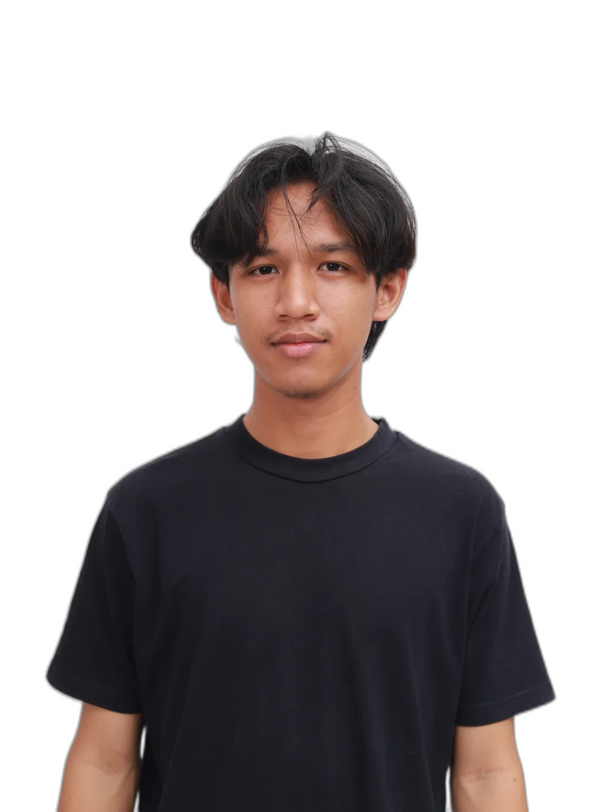

Tentang Saya

Profil
Saya Axel Ariel, seorang videografer dan fotografer freelance dari Batam, Indonesia. Sejak 2019, saya telah mendedikasikan diri untuk mengabadikan momen-momen berharga dengan pendekatan sinematik yang personal dan bercerita.
Spesialisasi saya mencakup wedding cinematic, video korporat dan brand, dokumentasi foto, serta konten media sosial. Saya percaya bahwa setiap project adalah kesempatan untuk menciptakan karya yang akan dikenang selamanya.
Dengan peralatan Sony A7SII, gimbal, dan drone DJI, setiap frame yang saya hasilkan dirancang untuk menyampaikan emosi dan cerita yang autentik. DaVinci Resolve dan Premiere Pro adalah senjata utama saya di meja editing.
"Setiap frame yang kamu tangkap adalah keputusan kreatif. Setiap cut adalah emosi yang ingin kamu sampaikan."
5+
Tahun Pengalaman
47+
Wedding Films
500K+
Viral Views
8K+
Followers
Perjalanan
2024 – Sekarang
Videografer & Fotografer Freelance
Independen · Batam
2024
Videografer — Bank Indonesia
Proyek Video Promosi Brand Nasional · Batam
2024
Creative Lead — Innoverse Event
Aftermovie Divisi Terfavorit · Batam
2022 – 2024
Wedding Cinematographer
47+ Wedding Films · Batam & Sekitarnya
2019 – 2022
Fotografer & Videografer Pemula
Freelance · Batam
Pencapaian
2024
Divisi Terfavorit — Aftermovie Innoverse
Innoverse Organization · Batam
2024
Official Videografer — Bank Indonesia
Bank Indonesia · Kampanye Nasional
2023
500K+ Organic Views — TikTok Viral
Platform TikTok · @shotbyaxell
2022
Sony Alpha Creator Workshop
Sony Indonesia · Online
FAQ
Tersedia untuk wedding, korporat, event, dan konten kreatif.